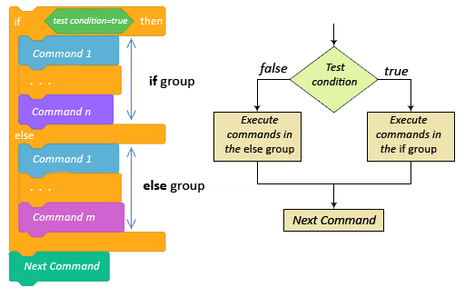
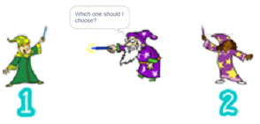
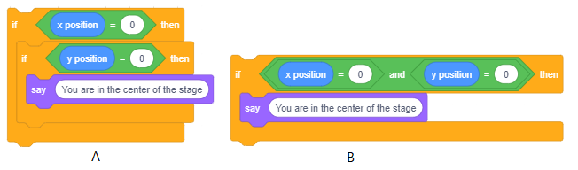
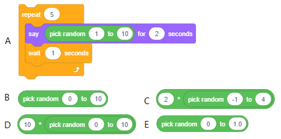
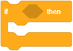

Da ili ne - donošenje odluka¶
U ovoj lekciji naučit ćemo kako koristiti blokove grana koji omogućuju grananje i kako izgraditi složene uvjete donošenja odluka. Sistematiziraćemo blokove koji omogućuju realizaciju osnovnih elemenata programske logike na Scratchu. Upoznat ćemo više blokova iz grupe Sensing (Očitanja) i pokazati kako koristiti uređivač vektorskih slika.
Naredbe za grananje
U projektima s jednostavnom linijskom strukturom, svaka se naredba izvršava točno jednom. U prethodnoj lekciji upoznali smo se sa Opisnim blokovima C-bloka koji omogućuju da se naredbe koje su umetnute u njih izvršavaju više puta - Blokovi grupe upravljanje. Pored blokova koji upravljaju skriptama, blokovi grananja imaju i unos skripte. Ovisno o tome je li ispunjen uvjet grananja, uneseni nalozi će se izvršavato ili se ne izvršavaju.
Naredba grane kojoj C-blok odgovara, pored ulaza za logički izraz, ima jedan ulaz za skripte, a onaj koji odgovara bloku E - dva ulaza za skriptu. Prva naredba omogućuje vam izvršavanje naredbi uloženih u ako… onda „usta“ kada je ispunjen uvjet grananja, a ako ne, onda se neće jednom izvršiti i nastavit će se s izvršenjem prve naredbe slijedeći naredbu za uvjetno prebacivanje.

Druga uvjetna naredba grane preskače neke naredbe je li ispunjen uvjet grane ili ne. Ako je ispunjen uvjet grane, iz naredbe ELSE se neće izvršavati naredbe, a ako uvjet nije ispunjen, neće se izvršavati naredbe iz THEN grane.
Dakle, za razliku od jednostavnih linijskih programa u kojima se svaka naredba izvršava točno jednom, ciklično u kojem postoje naredbe koje se mogu ponavljati (unutar tijela ciklusa), u programima s razgranatom strukturom postoje naredbe koje se neće izvršiti niti u jednom trenutku.
{kind=link}
Osnovni elementi programske logike na Scratchu
Kao što smo rekli, skripte opisuju ponašanje objekata za koje su vezane. Svi scenariji ponašanja objekata, koliko god složeni bili, sastoje se od kombinacije osnovnih elemenata programske logike, naime:
slijed koraka,
ponavljanje i
grananje.
U računalnoj znanosti umjesto riječi skripta koristi se termin algoritam. Koncept algoritma poznat je stoljećima, ali je poseban značaj dobio tek pojavom računala. Možemo reći da je svaki niz razumljivih i preciznih uputa o tome kako riješiti postavljeni zadatak algoritam.
Prelazak ulice, priprema hrane na recept, telefoniranje, rješavanje problema matematike - sve se to svodi na obavljanje nekih osnovnih operacija zadanim redoslijedom. Elementarnim se operacijama u algoritmima nazivaju naredbe, koraci ili naredbe.
Algoritam može biti više ili manje precizan u riječima. Međutim, puno bolji uvid u strukturu i redoslijed izvršavanja uputa daje grafički zapis algoritma. Grafička shema koja svojim simbolima označava prirodu pojedinih algoritamskih koraka naziva se blok dijagram. Blok dijagrami koriste posebne simbole za snimanje određenih vrsta algoritamskih koraka.

Osnovni cilj blok dijagrama je navesti redoslijed izvršavanja pojedinih algoritamskih koraka. Omogućuje jasnu vezu između detalja i čitavog algoritma i olakšava otkrivanje pogrešaka u njegovoj strukturi.
Algoritmi mogu imati jednostavnu linearnu, razgranatu i cikličku strukturu. Za jednostavne algoritme linearne strukture, koraci se izvode jedan za drugim od početka do kraja. S algoritmima s razgranatom strukturom postoji nekoliko alternativnih ruta izvršavanja. Prema tome, neki se koraci, ovisno o podacima, uopće neće izvoditi. Za algoritme s cikličkom strukturom, neki se koraci mogu izvesti više puta.
Sljedeća slika prikazuje blok dijagrame za izračunavanje vrijednosti x na temelju zadane ulazne vrijednosti pomoću tri vrste algoritma: s jednostavnom linearnom, razgranatom i cikličkom strukturom.

Primjeri su preuzeti iz udžbenika matematike za drugi razred osnovne škole. Pokušajte odgovoriti na sljedeća pitanja na temelju njih.
Kolika će biti vrijednost x nakon izvršenja svakog od algoritama ako je ulazna vrijednost a=5, a koliko ako je a=16?
Koji se korak u algoritmu s razgranatom strukturom neće izvesti ako je a=5, a koji ako je a=16?
Koliko će se puta zadatak x = x + 3 izvesti u algoritmu s cikličkom strukturom ako je a=5, a koliko puta ako je a=16?
Zapis ovih algoritama na Scratchu prikazan je na sljedećim slikama.
Prvi algoritam jednostavne strukture retka podudara se korak po korak.

Drugi algoritam grananja podudara se sa skriptom za grananje.
{kind=link}
Algoritam strukture trećeg ciklusa usklađuje se s ponavljajućom skriptu.

Skripte u Scratchu izgledaju kao zapis algoritma blok dijagrama.
Funkcije blokova iz grupe Sensing (Očitanja)
Grupa Sensing sastoji se od blokova koji projektu omogućuju prihvaćanje unosa s različitih uređaja, poput ljudskih osjetila koja prikupljaju informacije iz svoje okoline. Dakle, postoje blokovi u kojima se pohranjuju podaci koji odgovaraju podacima koje osoba prikuplja osjetom dodira, osjetila vida ili sluha. Neki blokovi u ovoj grupi omogućuju pokretanje različitih radnji, ovisno o položaju lika, ovisno o vremenu, datumu i slično. U ovoj lekciji predstavit ćemo blokove koji:
pohranjuju informacije o položaju lika u odnosu na pokazivač miša i druge predmete,
omofućiti ulaz sa tipkovnice,
pohranite podatke o tekućim operacijama miša i tipkovnice.
Preostali blokovi iz Sensing grupe predstavit će se u sljedećim lekcijama, a cjelovit pregled njihovih funkcija dat je u 11. lekciji ovog praktičnog programa.
 Prouči sljedeće primjere projekta¶
Prouči sljedeće primjere projekta¶
Primjer 1 - Projekt “Selection”¶
U ovom projektu stari čarobnjak treba izabrati pomoćnike.
{kind=link}
Samo nemože odlučiti koga, pa traži korisnika da mu pomogne tako što će unijeti redni broj kandidata za pomoćnika.

Ova se vrijednost uspoređuje s uvjetnom naredbom prijenosa s brojem kandidata. Ako je korisnik upisao broj 1, čarobnjak skreće lijevo prema kandidatu 1, a u suprotnom, desno prema kandidatu 2.

Kompletna skripta koja opisuje ponašanje čarobnjaka prikazana je na sljedećoj skripti.

Primjer 2 – Projekt “Dangerous Snowflakes”¶
Dangerous Snowflakes je jednostavna igra u kojoj korisnik pokušava spasiti Snjeguljicu od velikih opasnih pahulja koje neprestano padaju. Korisnik pomoću tipki sa strelicama na tipkovnici vodi Snjeguljicu s lijeve na desnu stranu i pokušava izbjeći pahulje koje padaju različitim brzinama i kutovima s vrha zaslona. Ako pahulja dodirne Snijeg, napuše se i deformira i igra je gotova.
Likovi i pozadina
Kad pokrenete novi projekt, u knjižnicu učitajte slike Pozadine i likove Snowflake i Snowman. Stavite Snješka u donji desni kut pozornice i možete započeti s programiranjem..
Ponašanje snježne pahulje
Da bi se uvela nesigurnost, potrebno je da se pahuljice pojavljuju na različitim mjestima i padaju različitim brzinama i različitim smjerovima.
Sve ove nesigurnosti postižemo korištenjem bloka  .
.
Snježna pahulja trebala bi se pojaviti na vrhu pozornice i kliznuti prema njenom dnu. Sljedeći blok naredbi opisuje njegovo kretanje.

Prva naredba postavlja pahuljicu na mjesto čija je x koordinata nasumično stvorena. Treća naredba postavlja točku u kojoj pahuljica klizi između 0,5 i 3,5 sekunde i nestaje.
Umetnut ćemo ovaj naredbeni blok u petlju koja će se ponavljati dok snježna pahuljica ne dotakne Snješka. Kada ga dodirne, igra se završava.

Ponašanje Snješka
Na snježnoj kuglici nalaze se 3 skripte - reakcije na klik na zelenu zastavicu i pritiskanje strelica lijevo i desno. Na početku Snješko daje upute za igru i u Forever petlji provjerava je li ga dotaknula pahulja. U tom slučaju najavljuje da je igra gotova i zaustavlja sve skripte.

Kako bismo igru učinili atraktivnijom, dodaćemo i posebne efekte koji se mogu postići blokovima iz grupe Looks.
Kao što smo vidjeli u primjeru 2 lekcije Nizanje koraka, naredba  promjena učinka može promijeniti lik na više načina.
promjena učinka može promijeniti lik na više načina.
Kad pahulja dodirne Snješka, promijenit ćemo ga i primijeniti efekte ribljeg oka i boje. Ponovit ćemo ove promjene 5 puta s kratkom pauzom nakon svake promjene (Sl. A). Kako ne bismo deformirali program prilikom ponovnog pokretanja programa, mi ćemo u početku ukloniti sve grafičke efekte i veličinu postaviti na 100%. (Sl. B).
{kind=link}
Primjer 3 – Projekt “Day and Night”¶
U ovom se projektu dva lika, pas i mačka, ponašaju različito ovisno o tome je li dan ili noć.
Na pozornici su dvije kuće, od kojih jedna pripada mački, a druga pesu. Povezuju ih dvije pozadine - dan i noć.
Pozadina dana pokazuje sunce, svijetlo plavo nebo i travu. U pozadini noći sve osim kuća tamnoplave boje, a na nebu su vidljive zvijezde i mladi mjesec. Dnevne i noćne pozadine mijenjaju se na svakih 5 sekundi.
Kad je dan, mačka i pas izlaze iz svojih domova i love se. Mačka trči u krug, a pas ide prema mački i pokušava joj se približiti.
Kad je noć, mačka i pas odlaze svojim kućama i miruju.

Stvaranje likova
Izbrišite Sprite1 i izaberite likove psa (Dog2) i mačka (Cat2) iz biblioteke. Pas ima 3 kostima, od kojih ćemo koristiti samo prva dva, pa izbrišite treću. Mačka ima samo jedan kostim, pa trebamo nacrtati još jedan kako bismo mogli napraviti animaciju o kretanju. Za izradu još mačjeg kostima koristit ćemo uređivač vektorskih slika. Desnom tipkom miša kliknite kostim maččke kako biste otvorili izbornik prečaca i odabrali duplikate.
Dobivamo novi kostim (Cat3) koji ćemo izmijeniti u koracima ilustriranim na sljedećoj slici.

Kreiranje pozadine
Klikni na tipku Choose a Backdrop (desno od liste likova), pa izaberi opciju Paint
Iz palate vektorskih alata izaberi  , a način cratanja neka bude bez popunjavanja. Nacrtaj kučicu kao što je prikazana na sljedećoj slici
, a način cratanja neka bude bez popunjavanja. Nacrtaj kučicu kao što je prikazana na sljedećoj slici

Alatom  smo grupirali predmete kojim smo napravili kućicu, korištenjem alata
smo grupirali predmete kojim smo napravili kućicu, korištenjem alata  pomnožite okvir i kopiju premjestite u donji desni kut pozornice, a original u gornji lijevi kut.
Zatim prilagodite veličinu znakova kako bi se mogli uklopiti u okvire.
pomnožite okvir i kopiju premjestite u donji desni kut pozornice, a original u gornji lijevi kut.
Zatim prilagodite veličinu znakova kako bi se mogli uklopiti u okvire.
Sаdа prеlаzimо nа bојanjе аlаtom  . Primjena ovog alata razlikuje se od mape bitova pri popunjavanju područja.
Naime, ako područje nije zatvoreno, u mapi bitova boja “curi” na cijeloj slici. U vektorskom načinu se to ne događa - ne možete uopće obaviti bojenje.
Stoga na povećanoj slici prvo treba prvo zatvoriti područje.
To se radi pomoću alata
. Primjena ovog alata razlikuje se od mape bitova pri popunjavanju područja.
Naime, ako područje nije zatvoreno, u mapi bitova boja “curi” na cijeloj slici. U vektorskom načinu se to ne događa - ne možete uopće obaviti bojenje.
Stoga na povećanoj slici prvo treba prvo zatvoriti područje.
To se radi pomoću alata  kliknite na sliku, a zatim odaberite dio nepovezane slike (2) i povežite ga s ostatkom slike (3). Zatim pomoću alata možete obojiti unutrašnjost (4) i linije koje čine područje (5).
kliknite na sliku, a zatim odaberite dio nepovezane slike (2) i povežite ga s ostatkom slike (3). Zatim pomoću alata možete obojiti unutrašnjost (4) i linije koje čine područje (5).

Kako smo koristili alat pri crtanju kućice , ne bi trebalo biti problema priliokm bojenja.
Sljedeća slika prikazuje način i rezultat punjenja dijelova kućice.

Budući da ste obojali kućice, duplicirajte ovu pozadinu.
Dopunit ćemo prvu pozadinu da predstavlja noć, a drugu da predstavlja dan.
Stvaranje noćne pozadine
Nacrtajte ispunjeni plavo-plavi pravokutnik preko cijele pozornice, a zatim pomoću alata Back  postavite ovaj pravokutnik iz oba okvira. Isto se muže učiniti s povratnim alatom
postavite ovaj pravokutnik iz oba okvira. Isto se muže učiniti s povratnim alatom  ali morat ćete kliknuti na pozornicu onoliko slojeva koliko ima slika.
Kad su oba okvira vidljiva, prijeđite na crtanje mjeseca i zvijezda
ali morat ćete kliknuti na pozornicu onoliko slojeva koliko ima slika.
Kad su oba okvira vidljiva, prijeđite na crtanje mjeseca i zvijezda
Mladi mjesec može se nacrtati najprije crtanjem ispunjenog žutog kruga (1), a zatim djelomično crtanjem većeg kruga ispunjenog bojom pozadine (2).
Da biste oblikovali zvjezdicu, nacrtajte trokut bijelom bojom (3), zatim pomnožite i zakrenite ga (4) i na kraju cijeli oblik ispunite bijelom bojom (5).

Na kraju kopirajte gotove zvijezde, rasporedite ih po pozadini, neke povećajte, a neke smanjite i noćna je pozadina gotova.

Kreiranje pozadine Dan
Nacrtajte sunce alatom , a zrake  . Zatim nacrtajte veliko nebo plavim pravokutnikom širinu pozornice kako biste nacrtali nebo i pošaljite ga koliko je slojeva ispod potrebno da biste vidjeli sve detalje.
(Ako biste prvo nacrtali nebo, a nakon što bi sunce brže postavilo nebeski sloj, ovo biste trebali staviti iza svih sunčevih zraka).
. Zatim nacrtajte veliko nebo plavim pravokutnikom širinu pozornice kako biste nacrtali nebo i pošaljite ga koliko je slojeva ispod potrebno da biste vidjeli sve detalje.
(Ako biste prvo nacrtali nebo, a nakon što bi sunce brže postavilo nebeski sloj, ovo biste trebali staviti iza svih sunčevih zraka).
Zatim nacrtajte pravokutni pravokutnik ispunjen zelenom travom i pošaljite ga na pozadinu slike.
Postupak stvaranja dnevne pozadine ilustriran je sljedećom slikom.

Budući da smo gotovi s pozadinom dana, možemo početi pisati skriptu za ponašanje likova.
Dan i noć sinkronizacija događaja
U ovom je projektu osnovno ponašanje diktirano pozadinom. Objavljuje dnevne i noćne poruke na koje oba lika reagiraju.

Sljedeće slike prikazuju skripte pripojene znakovima kako biste vidjeli kako reagiraju na te poruke.


 Odgovori na sljedeća pitanja.¶
Odgovori na sljedeća pitanja.¶
Pitanje 1¶
- da
- Točno.
- ne
- Uvjet 1=1 nije potpuni.
Q-1: Hoće li lik izgovoriti Hello po izvršenju naredbe uvjetnog prelaska?

Pitanje 2¶
- da
- Budući da je vrijednost izraza 1=2 uvijek lažna, naredba iz DA-ove grane nikada se neće izvoditi.
- ne
- Točno.
Q-2: Hoće li lik izgovoriti Hello po izvršenju naredbe uvjetnog prelaska?

Pitanje 3¶
- 5
- Netočno 5<5
- -5
- Točno.
- 0
- Točno.
- 10
- Netočno 10<5.
Q-3: Koji od odgovora korisnika će omogućiti izvršenje naredbe u THEN grani?

Pitanje 4¶
- Ponesi kišobran
- Točno
- ništa neće izgovoriti
- U tom slučaju je uvjet za grananje ispunjen.
Q-4: Što će izgovoriti lik ako korisnik ns pitanje Is it raining odgovori s yes?

Pitanje 5¶
{kind=link}
Pitanje 6¶
- da
- Kako je vrijednost izraza A=B uvijek lažna, naredba iz grane NE izvršit će se.
- ne
- Točno.
Q-6: Hoće li se lik prikazati po izvršenju naredbe uvjetnog prelaska?

Pitanje 7¶
- različiti bez obzira na poziciju lika
- U oba slučaja uvjet koji mora biti ispunjen za rečenicu "Vi ste u središtu pozornice" je isti.
- isti bez obzira na poziciju lika
- Točno.
- različiti ako je y različito od 0
- U ovom slučaju, uvjet nije ispunjen ni u jednom od blokova (A) ili (B), a "Vi ste u središtu pozornice" neće biti rečeno.
- različiti ako je x različito od 0
- U ovom slučaju, uvjet nije ispunjen ni u jednom od blokova (A) ili (B), a "Vi ste u središtu pozornice" neće biti rečeno.
Q-7: Kakav je rezultat izvršavanja blokova naredbi (A) i (B)?
{kind=link}
Pitanje 8¶
- Izričito određuje da su х=0 i у=0.
- Ovo su koordinate nekih točaka na dijagonali koordinatnog sustava, mogu biti (0,0), ali ne moraju biti.
- Ovo su koordinate nekih točaka na osi x ili y. Također može biti točka na kojoj se presijecaju, ali to ne mora biti.
Q-8: Koja od naredbi uvjetnog prelaska ima ispravan ubjet tvrdnje da su kordinate pozicije lika (0,0), odnosno da se lik nalazi u centru pozornice?
{kind=link}
Pitanje 9¶
- Ostatak je, nakon što je broj podijeljen sa 6, 0.
- Brojevi 2 i 3 zadovoljavaju ovaj uvjet, ali ne mogu se podijeliti sa 6.
- Broj 11 zadovoljava ovaj uvjet, ali ne može biti podijeljen sa 6.
- Broj se može podijeliti s oba glavna faktora broja 6.
Q-9: U projektu Choice pokazano je kako se operacije mod koriste za provjeru je li broj djeljiv s 2. Koji od sljedećih uvjeta omogućuje da se provjeri da li je unijeti broj djeljiv s 6? (Izaberi sve točne odgovore)

 Pokušaj!¶
Pokušaj!¶
Vježba 1¶
Kada se očekuje da korisnik unese neke podatke, treba postaviti pitanje koje predlaže oblik odgovora, na primjer: “Unesite datum rođenja (dd.mm.gggg)”. Formulirajte kako trebaju biti ulazna pitanja:
а) Broj između 1 i 10
Broj između -1,0 i 2,25
Imena i prezimena
težina
visina
Vježba 2¶
Idealan kalkulator težine zahtijeva da korisnik unese njihovu težinu (u kg) i visinu (u cm). Napišite dijelove programa koji provjeravaju je li korisnik unijeo ispravne podatke o težini, npr. od intervala [40, 160] i visine, npr. [140,210].
Vježba 3¶
Zapišite koji bi argumenti operacije trebali biti za generiranje brojeva iz skupa:
а) {0, 1}
{0, 1, 2, 3, … , 10}
{–2, 0, 2, 4, 6, 8}
{0, 10, 20, 30, … , 100}
{0, 0.1, 0.15, 0.26, 0.38, … , 1.0}
Provjerite svoje odgovore testiranjem za svaki primjer u ponovljenom ciklusu 5 puta koliko se vraća odgovarajuća operacija.
Upute:
Na primjer a) dat je cijeli blok naredbi, za ostale kaže samo onaj dio s generiranjem brojeva koji trebate staviti u blok say.
Na primjeru e) možete vidjeti da je dovoljno odrediti jednu granicu s decimalnom točkom za generiranje decimalnih brojeva.
{kind=link}
Vježba 4¶
Napišite naredbu za uvjetni skok s složenim uvjetima ekvivalentnim sljedećim sastavima naredbe za uvjetni skok:

Provjerite svoje odgovore testiranjem svojih odgovora u okruženju Scratch.
Vježba 5¶
Napravite mini projekt pod nazivom Greater u kojem lik traži od korisnika da upiše broj između 1 i 100. Zatim zamisli (koristeći operaciju slučajnim brojem) broj od 1 do 100 i kaže korisniku čiji je broj veći. Dijalog treba započeti klikom na znak.
Instruction:

 Ispravi greške!¶
Ispravi greške!¶
Bug 1¶
- Question
Pitanje: Učenik je želio stvoriti skriptu koja je omogućila kretanje lika pomoću strelica. Napisao je program prikazan na slici s lijeve strane. Tada je primijetio da se naredba ponavlja 4 puta pa je preradio skriptu u program prikazan na slici desno. Međutim, njegovo izvršenje nije postiglo željeno ponašanje lika. Što je pogreška?

Odgovor: U prepravljenom program naredba će se stalno izvršavati i lik će ići u smjeru u koji je posljednji put bio izabran, bez obzira jeli pritisnuta ili ne tipka s tim smjerom.
Greška 2¶
- Question
Pitanje: Učenik je želio izmijeniti ponašanje kandidata za čarobnjaka za pomoć u projektu Choice. Kada čarobnjak odabere djevojčicu za pomoćnicu, dječak bi trebao pomisliti: “Zašto si je izabrao?”. Tako se pridružio dječaku sljedećim scenarijem. Ali dječak je to zamislio na samom početku, prije nego što je čarobnjak odlučio. Kako uravnotežiti postupke čarobnjaka i dječaka?
{kind=link}
Odgovor:
Jedan je od načina da se čarobnjaku objavi poruka da je napravio izbor i da dječak odgovara tek kad primi tu poruku. Naravno, ako želimo da dječak ne reagira ako ga je čarobnjak izabrao, tada ovu komunikaciju poruka treba proširiti provjerom tko je odabran.

Greška 3¶
- Question
Učenik je želio da njegov lik bude usmjeren strelicama lijevom i desnom, zajedno s pokretom da izgovori riječ „lijevo“ dok je na lijevoj polovini pozornice, a riječ „desno“ kada na desnoj polovici. Pridružio se liku sljedećeg scenarija, ali lik uopće nije promijenio riječ koju bi izgovorio na početku, bez obzira na to što je prelazio drugu stranu pozornice. Što treba promijeniti u skriptu?
{kind=link}
Odgovor:
Provjera strane pozornice vrši se tek nakon što je projekt pokrenut. Potrebno je umetnuti test u beskonačni ciklus.

 Što smo naučili¶
Što smo naučili¶
U ovoj lekciji smo se obratili naredbama grananja koje vam omogućuju stvaranje skripti grananja. Predstavili smo blokove iz grupe Sensing i pokazali kako se naredba za unos podataka s tipkovnice izvršava na Scratch. Također smo naučili kako se ponašanje karaktera može sinkronizirati putem poruka. Pokazali smo kako koristiti alate u vektorskom načinu ugrađenog uređivača slika.
Novi pojmovi: algoritmi, vrste algoritamskih koraka, atruktura algoritama, uvjetno izvršavanje, složeni uvjeti, očitanja kao način prenošenja informacija, vektorski alati uređivača slike.
Nove naredbe: - ,  ,
,  ;
;  -
-  ,
,  ;
;  -
-  ;
;  -
- 
 Napravi neki od sljedećih projekta¶
Napravi neki od sljedećih projekta¶
Projekt 1 – “Padaju jabuke”¶
Napravite igru čiji je scenarij sličan scenariju projekta Dangerous Snowflakes. Glavni lik ovog projekta je biti dječak kojeg korisnik može voditi s lijeva na desno s tipkama tipkovnice. Treba izbjegavati jabuke koje se pojavljuju slučajnim položajem u gornjem dijelu pozornice i klizne na slučajni položaj u donjem dijelu pozornice. Ako dodirnu dječaka, igra je gotova, a ako ne, sakriju se i ponovno pojavljuju na vrhu pozornice i kliznu prema dolje. Brzinu klizanja također treba odrediti nasumično, kao što je između 1 i 3 sekunde. Da biste igru učinili uzbudljivijom, jer stvarate pravu skriptu za jednu jabuku, pomnožite ovaj lik tako da, na primjer, tri jabuke ponove odgovarajuće ponašanje.
Projekt 2 – “Gladni morski pas”¶
Napravite projekt u kojem će glavni lik - morski pas loviti ribe. Morski pas bi trebao neprestano kretati ulijevo i udesno, a kada se klikne na tipku razmaknicu trebao bi se pomicati prema gore. Ako morski pas dodirne ribu, riba nestaje, ali se ponovo pojavljuje nakon 3-5 sekundi na nasumičnom mjestu. Različito trajanje pauze između dva pojavljivanja riba i različitog mjesta na kojem će se one dogoditi daju slučajni broj pomoću operacije. Morski pas (Shark2) ima tri kostima, tako da promjena kostima može pokazati reakciju kad dodirne ribu. Ribe, rakovi i meduze pridružuju se različitim pokretima, na primjer, pustite meduze da se penju gore i dolje, rakovi se okreću ulijevo i udesno, a ribe plivaju različitom brzinom. Preuzmite sve likove: morski pas, različite ribe, rakove, meduze i pozadinu iz biblioteka likova i pozadina. Možete dobiti različitu ribu koristeći različite Riblje kostime.
Projekt 3 – “Pas i Mačka”¶
Napravite projekt u kojem ćete koristiti dva lika - psa i mačku, te dvije pozadine. Mačka u početku polako hoda lijevo i desno između rubova pozornice, a njegove bi se misli trebale pojaviti u bloku ideja. Nakon deset sekundi izlazi pas koji laje i plaši mačku. Mačka pobjegne, a kad s prvom pozadinom dođe do ruba pozornice, trebala bi se pojaviti druga pozadina. Kad mačka pređe čitavu pozornicu s ovom pozadinom, ona bi trebala nestati - uspio se sakriti. Tek tada se pas pojavljuje, zaustavlja, a u oblaku ideja pojavljuje se upitnik.
Za realizaciju ovog projekta potrebno je:
pisati skripte koje opisuju ponašanje mačaka,
iz pozadinske knjižnice uvezete psećeg lika kojem ćete priložiti zvučnu datoteku i skripte za lajanje koje opisuju njegovo ponašanje,
uvezete dvije pozadine, Playng Field i Garden-rock: prvo gdje mačka upozna psa, a drugo mačka pobjegne kad čuje lajanje psa
sinkronizirate pseći lavež i reakciju mačke na njega - bježanje,
sinkronizirate “ponašanje” dviju pozadina, tj. trenutka njihove zamjene.